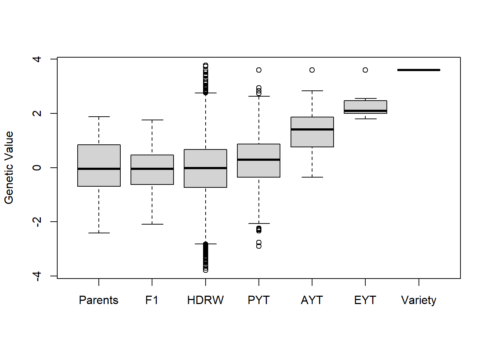

Chapter 12 Quantitative genetics and breeding program design.
The purpose of this exercise is to give a flavour of the algebra underpinning quantitative genetics, the manipulations of means and variances that can be done, and the use to which these can be put. Many of you will find this hard, and you may not have done this sort of thing before. Don’t worry, we’ll guide you through it, and will step through it at the end too.
12.1 Means and variances in some simple models
12.1.1 Additive-dominance model of means in a tomato cross
Data are from Biometrical Genetics, the classic textbook by Mather and Jinks, with some modification (Mather and Jinks 1971).
The mean weight per locule in a cross between two tomato varieties was:
per locule
P1 10.36
P2 0.45
F1 2.33(I assume the units of measurements are grams – M&J don’t say!)
Calculate:
\(m\) =
\(a\) =
\(d\) =
You can check that the calculations are correct by predicting the three cross means from m, a, and d. You should get a perfect fit.
To test the model (informally), we can compare the observed and predicted means of the F2:
Predicted mean as (\(m\) + \(½d\)) =
Observed mean = 2.12.
With more information, we could test the statistical significance of the difference between the observed and predicted F2 means. (It is significant.) Does this mean this is a good model or a bad model? This approach can be extended to include more generations and crosses – usually the F3 or mean of completely inbred lines, and the two back cross generations, which allows fitting more complex models to the means, including interaction terms.
Here is another example:
P1 1.02
P2 -0.35
F1 0.37As before, estimate \(m\), \(a\) and \(d\).
\(m\) =
\(a\) =
\(d\) =
F2 predicted =
F2 observed = 0.33
In this case, the difference between observed and predicted F2 means is not statistically significant. There is a simple relationship between the data in these two examples. I will explain and we will discuss.
12.1.2 Variances in a barley NAM population
Data are taken from Sharma et al. (2018).
To introgress new variation from wild to elite barley, backcrosses were made of Hordeum spontaneum accessions to an elite Barley variety, Barke. About 60 inbred lines were derived from each backcross and scored for traits of interest.
Summary data on heading date for 22 crosses are in the spreadsheet ‘NAM phens exercise,’
For each cross, calculate \(m\) and \('a'\) from the mean of the two parents. N.B. convention is that \('a'\) is defined with reference to the higher scoring parent, so it is always positive. However, for ease of comparison and calculation here, define it with reference to the spontaneum parent: it will usually be positive but can sometimes be negative. \('a'\) is often written as \([a]\) to make it clear that this is a net additive effect over multiple loci.
Comment on the difference in numbers of late and early transgressive segregants. Is there any pattern?
Multiple linear regression over crosses of the number of transgressive segregants on \([a]\) and the square root of the variance (the standard deviation) gave the following results on these data:
Regression on
Trait [a] s.d.
Total no. transgressive -0.05 -5.26
No. early transgressive 1.11 -4.93
No. late transgressive -1.17 -0.30Does this help with the interpretation?
NB I regressed on standard deviation rather than on the variance for ease of interpretation (same scale of measurement for mean and s.d.). However, using linear regression here, especially for the number of late transgressive lines is suspect.
We ought to have spent time studying the raw data. These are available in the spreadsheet. A set of box plots in R will give an overview of the variability across crosses. Plot histograms of individual crosses for more detail. (Hint – use the R command “split” to chop the data into individual crosses).
12.2 Selecting in backcrosses
Selecting among inbred lines derived from F2 and backcross generations.
Schnell and Utz (1975) introduced the usefulness criterion to compare the merit of different crosses. This is a simple application of the breeders’ equations:
\[U = m + ihσ_{g}\]
For lines derived from any cross, provided one has estimates of genetic variation, heritability and intensity of selection (and two of those are under your control), then \(U\), the usefulness, can be used to select between crosses. Note we include the mean. The major problem, as with all cross prediction methods, is in estimation of the genetic variance of the cross. The cross mean can be approximated by the mean of the two parents. There is increased interest in usefulness with the advent of genomic selection, since this might estimate genetic variance within crosses in advance of making the cross (proved in simulation only so far, I believe). Recent discussions are R. Bernardo (2014b) and Allier et al. (2019).
When comparing the relative merits of backcross and F2 derived lines, usefulness is easier to apply, since we can derive the mean and genetic variance theoretically.
In the lecture, we used the following example:
Simple additive model so mean of cross = mean of parents.
Cross 1: P1 = P2 = 100, Va =10 (between RILs)
Cross 2: P1 = 100, P2 = 50, Va =100 (between RILs)12.3 Size of breeding programme, cycle time and recurrent selection schemes.
It is not intuitively obvious whether resources are best allocated to increasing the scale of a breeding programme – by testing more varieties and/or by testing more extensively – or by running the breeding programme quicker. This can be studied in general terms by considering the breeders equation:
\[R = ihσ_{g}\]
For this exercise will need to install Solver in Excel. Solver is a Microsoft add-in. Within excel, click on the Office button or ‘File,’ then select ‘Excel options’ or just ‘options’ at the base of the drop down menu, then click on ‘Addins’ on the left hand side of the next screen, select ‘Excel Add-ins’ at the bottom of the same screen, then click Go. Ensure that “Solver Add-in’ is selected then click OK. Sometimes, solver has been selected but doesn’t appear on the ‘Add-in’ tab. Deselecting it, then reselecting it usually works. Once installed, you should find Solver by clicking on the ‘Data’ tab, after which you should see “Solver” on the right hand side at the top of the screen.
Solver maximises or minimises the contents of a single cell by altering the values in user specified cells. There must be a formula in the cell to be minimised which links to the contents of the cells to be changed. This maximising and minimising of functions is also available in statistical packages, but the implementation in Excel is easier to follow. If, say, the cell to be minimised contained the error sum of squares from a regression analysis and the cells to be changed were the parameters in that regression, solver would search for the least squares solution. Of course, there are easier ways of estimating regression coefficients in Excel and other statistical packages but there are occasions when the standard method does not work.
12.3.1 Size of breeding programme
Consider intensity of selection; \(i\). It is obvious from the breeders’ equation that doubling \(i\) will also double the response to selection, but what does this require? For any proportion of the population which is selected (ranging from 0 to 1 obviously) \(i\) can be calculated. It has been tabulated in many textbooks but can be more conveniently be calculated from approximate formulae available in the “intensity of selection” spreadsheet included in the data folder (these approximations are very accurate.)
Suppose you must always select at least 10 lines or individuals to go forward to the next generation.
17
a: What are the populations sizes required for 0.4, 0.2, 0.1, 0.05, 0.025 and 0.0125 selection? Look up the intensity of selection for these proportions.
b: Plot the intensity of selection against the required population size.
c: What does this tell you about the merit of increasing the scale of a breeding programme as a strategy for increasing response?12.3.2 Speed of selection
Next consider speed. If we can cycle through our material twice as fast, then we get twice the response to selection. Of course, there are cost implications for this. Suppose that to compensate for doubling the speed, you must halve the population size. Thus, the rapid scheme selecting 10% from a population of 100 is equivalent in cost to the slower scheme selecting 5% from a population of 200. Take the intensities of selection you calculated in the previous paragraph, and double them to get responses to selection from the rapid schemes. Then compare these to the original intensities from schemes with twice the population size.
12.3.3 Heritability
Heritability also affects response to selection. As plant breeders, the heritability of the units on which we select (lines, hybrids, clones) is often under our control as we can grow more replicates of each. Ignoring subtleties about allocation of resource between sites / years / replicate plots, we can study the effect of testing more extensively by taking the heritability of a candidate for selection as:
\[h^2 = Vg / (Vg + Ve/n)\]
\(Vg\) and \(Ve\) are genetic and environmental component of variations and \(n\) is the number of replicates. Clearly as \(n\) goes up, so will \(h^2\) and therefore so will the response to selection.
Set up a spreadsheet to calculate response to selection while varying \(i\), \(n\), and \(Ve\). I’ve set up a template to help you get started. There is a workbook “response to selection” in the spreadsheet “resource allocation.xls.” Change the size of the population before selection and the number of replicates tested while keeping the total number of plots per breeding cycle fixed at 1000 (we assume this represents a fixed cost for the different breeding programmes). Observe the consequence on response to selection.
19
a: What is the best allocation of plots and intensity of selection? (You can do this by trial and error or use “solver.”)
b: Reduce the cycle time from 2 years to 1 and repeat the optimising process, maintaining the plots per year at 500. What would you spend your money on?
c: What other information could we add to make the system more realistic? Are we assuming anything else?12.3.4 Sequential Selection
Remember that the genetic variance remaining among a set of lines, after selection, is
\[Vg’ = [1-i(i-z)h^2 ]Vg\]
We can use this formula to devise sequential selection programmes. The spreadsheet, “seq sel.xls” does this in the worksheet “deterministic.” I’ll talk you through it.
We’ll use these variance components:
genotypes 2.513
g x trials 3.477645338
plot error 3.415354662These are estimates from the analysis of a multi-centre Oil Seed Rape analysis, ignoring countries. We’re assuming there is no genotypes x years interaction (improbable). Because of the nature of the data (site means), we also have to assume that the plot error is fixed – there is no opportunity to change it by altering replicate numbers within trials. But as we have already seen, the optimum allocation would be just one replicate per site.
The OSR trial series had 1023 plots, we’ll round it to 1000, allocated to candidate varieties; the rest were allocated controls. For simplicity, we’ll assume there are up to 1000 varieties to test. What is the maximum response the breeder can get by testing in a single year? He can discard varieties: no need to test them all. To calculate this, optimise the response over 1 year for 1000 plots: since we have assumed no varieties by years interaction we can do this just be optimising the response in a single year, selecting one variety with 1000 plots (I get a maximum response of 3.56)
Now consider two-stage selection. How much better can we do now, with the same total plot number? I’ll talk you through the spreadsheet to explain how it works.
20
a: What advantages would computer simulation have for this sort of exercise? Any disadvantages?
b: Assume that the second stage adds 1 year to a 6 year breeding programme? Is the extra response worth the additional time?
c: Consider a constant cost per trial site on top of a standard cost per plot. We’ll invent some figures in the class. What allocation gives you the best value for money? Measure value for money as response to selection per year per dollar.
d: Suppose that the varieties x years component was equal to the varieties x sites (within years) component. What effect does this have?12.3.5 Optimal Contribution Theory
If the best 10% of individuals are selected and contribute equally to the next generation, the predicted response to selection can be looked up in tables or calculated. Associated with this response will be some loss of genetic variation which can be quantified by the increase in inbreeding within the population or equivalently by the effective population size. These in turn are functions of the number of selected individuals. However, truncation selection is not optimal. Other selection schemes can be found which give a greater response to selection for the same rate of loss of variation. The optimum contribution can be found by putting a restraint on inbreeding and then searching for the proportional contribution of every individual to the next generation which maximises response. This is optimal contribution theory. I learnt it from tree breeders: D. Lindgren, Libby, and Bondesson (1989) and D. Lindgren, Wei, and Bondesson (1993) and also from Toro and Nieto (1984), but it is now generally associated with John Woolliams from the Roslin institute and colleagues (e.g. Woolliams et al. (2015)), with more complexity introduced to consider long term contribution over greater than one generation. The theory is becoming more important as genomic selection is taken up; a risk from this is that rates of inbreeding and loss of genetic variation will increase unless controlled. The basic principle is easy to demonstrate however.
Column B of the spreadsheet “optimal contribution theory” shows expected breeding values of 100 individuals where these are perfectly normally distributed.
Column C is the proportional contribution of each individual to the next generation. These can be altered but must add up to one and cannot be negative. They are currently set to 0.02 for the first 50 individuals and to zero for the others.
Column D is the product of B and C and is the contribution to the mean of the selected group of each individual. The sum of column D is the mean of the selected group, taking into account that individuals contribute unequally.
Columns F and G report some summary statistics. The total contribution must equal 1. The minimum contribution of any individual must be ≥ 0.
The sum of squares of the contributions across all individuals is a direct measure of loss of diversity and can be converted into a rate of increase in inbreeding and to effective population size (I. J. Mackay et al. 1999). The mean of the selected group is the sum of column D and is the intensity of selection if the breeding values have a mean of zero and variance of one (which they do here).
12.4 Simulations using AlphaSim
Recently, some excellent breeding programme simulation packages have started to become available. Notable among these is AlphaSim from the Roslin Institute. An R version has recently been released on CRAN, with associated publication (R. Chris Gaynor, Gorjanc, and Hickey 2020). Download and load the package:
install.packages("AlphaSimR")
library("AlphaSimR")The R package is still in development but it brings together powerful tools developed by the group in breeding program simulations (see. e.g. Faux et al. (2016) and R. Chris Gaynor et al. (2017)). AlphaSim takes as a starting point a population of lines in a breeding programme. Following the script for a basic wheat simulation documented in R. Chris Gaynor, Gorjanc, and Hickey (2020), the founder haplotypes in this population are generated from a coalescent simulation using either a predefined parameter set for a species (e.g. chromosome number, ploidy level, etc) or with a user defined set of parameters. Real breeding population data can also be used directly as input. In this example, a standard wheat breeding population is generated by the coalescent approach. SegSites refers to the number of segregating sites modelled per chromosome:
# Generate Founder haplotypes
founderPop = runMacs(nInd = 50, nChr = 21, segSites = 1000, inbred = TRUE)Single or multiple traits can be modelled. Setting parameters for a single trait:
# Set Global parameters
SP = SimParam$new(founderPop)$addTraitA(1000)$setVarE(H2 = 0.4)Traits can be modelled with additive variances plus any combination of dominance, epistatic and GxE variances Here the A stands for only additive. The final line sets the trait heritability (here = 0.4).
The next steps are to set up the stage of the breeding programme beginning with the parental crosses and F1s (see Figure 1 in R. Chris Gaynor, Gorjanc, and Hickey (2020)) for an overview of the scheme:
# Simulate first year of programme
Parents = newPop(founderPop)
F1 = randCross(Parents, 200)Followed by production and evaluation of double haploids in headrows (with reduced heirtability at this stage:
# 2nd and 3rd years
HDRW = makeDH(F1, 100)
HDRW = setPheno(HDRW, varE = 9) #H2=0.1And the start of a selection series, firstly within each DH family in a preliminary yield trial (5 is the number of lines selected per family)
# Evaluation in preliminary yield trial
PYT = selectWithinFam(HDRW, 5)
PYT = setPheno(PYT)And then in Advanced and elite yield trials across all lines with 100,10 and 1 selections being made in 3 stages, in increasing numbers of locations, ending up with a single variety.
# Evaluation in advanced yield trial
AYT = selectInd(PYT, 100)
AYT = setPheno(AYT, reps = 4)
# Elite yield trial
EYT = selectInd(AYT, 10)
EYT = setPheno(EYT, reps = 16)
# Variety release!
Variety = selectInd(EYT, 1)Finally the results can be visualised and quantified:
# Evaluation
yield = list(Parents = gv(Parents), F1 = gv(F1), HDRW = gv(HDRW),
PYT = gv(PYT), AYT = gv(AYT), EYT = gv(EYT), Variety = gv(Variety))
boxplot(yield, ylab = "Genetic Value")
yield$Variety## [,1]
## [1,] 3.588101The above script is an illustration of a single breeding cycle in a “typical” commercial wheat breeding programme. The software offers an almost limitless flexibility for designing breeding programmes with different combinations of crossing, propagation and selection phases and approaches over multiple breeding cycles, including options for adding genomic prediction at various stages (as can be seen in R. Chris Gaynor et al. (2017)) A wide range of parameters can also be modified, including different trait models, as well as selection on multiple traits. Some of this functionality has been made available in a GUI form at https://alphagenes.shinyapps.io/alphasimrshiny/ and some examples of the different analyses possible, including helpful teaching tools, are presented at https://bitbucket.org/hickeyjohnteam/alphasimr_examples/src/master/.
Explore the options available in the package window and think how you might simulate a breeding programme in your own crop species for a trait of interest. Think about which parameters are most important and how you might model them.